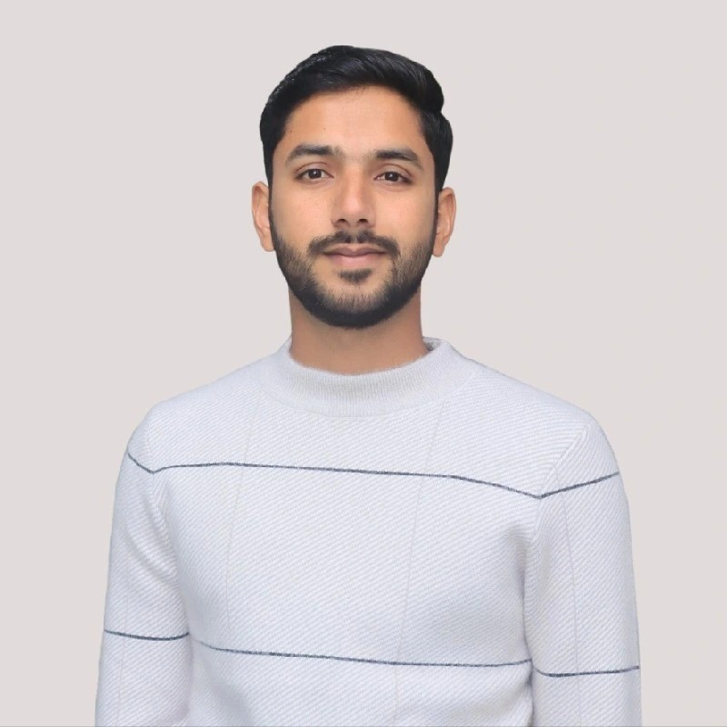

Causal Inference · Econometrics · Python & Data Analysis
I study agricultural systems, rural livelihoods, and development policy using causal inference, econometrics, and modern data science tools. Currently pursuing PhD opportunities in agricultural, environmental, or development economics.
About
I am an agricultural and resource economist with an MSc (Hons) from the University of Agriculture, Faisalabad (CGPA 3.78/4.0). My thesis applied Propensity Score Matching to examine how non-farm work affects agricultural productivity and household income — drawing on primary survey data from 150 rural households in Pakistan.
I currently serve as a Lecturer in Economics at the Higher Education Department, Punjab, where I teach applied microeconomics and production theory. I was selected through the Punjab Public Service Commission's competitive examination — among 46 candidates chosen from over 2,000 applicants.
My research interests sit at the intersection of agricultural economics, climate policy, and rural development. I complement traditional econometric methods with Python-based data analysis, allowing me to work rigorously across large datasets and deliver reproducible, policy-relevant research.
I am currently pursuing PhD opportunities in agricultural, environmental, or development economics. Alongside academic work, I am open to remote research, data analysis, and applied economic consulting engagements.
Research
How climate variability affects crop yields, farmer adaptation, and food system resilience in developing economies.
Causal evaluation of non-farm income, social programs, and policy interventions on smallholder welfare.
Supply chains, price volatility, and governance structures determining food access in rural regions.
Land tenure, resource allocation, and economic valuation of ecosystem services in agricultural landscapes.
Projects
Research & Data Projects
Data-driven analysis of agricultural structural transformation using World Bank indicators from 1961 to 2023. Explores long-run shifts in employment, output, and productivity across developing economies using Python.
A multi-agent AI system providing intelligent agricultural recommendations by analyzing farm conditions, environmental data, and economic factors. Built to demonstrate how modern AI tools can assist smallholder decision-making.
Teaching & Educational Tools
An open-access beginner notebook series designed to help economics students and professionals learn Python through practical, real-world economic examples. Developed from classroom experience.
A Streamlit-based productivity application that processes audio, video, or transcript files to generate structured meeting summaries and action items.
Expertise
Teaching
Teaches applied microeconomics and production theory, including incentive structures, decision-making under uncertainty, and market behaviour. Selected through the Punjab Public Service Commission — 46 appointed from 2,000+ applicants.
Facilitated live Python programming sessions for 20+ international students. Mentored participants in logical reasoning and computational thinking within a globally inclusive learning environment.
Recognition
Contact
I welcome inquiries related to PhD program opportunities, research collaborations, and remote data analysis or applied economic consulting work.
Whether you are a prospective supervisor, a research institution, or an organization seeking rigorous quantitative analysis, I am happy to discuss how I can contribute.